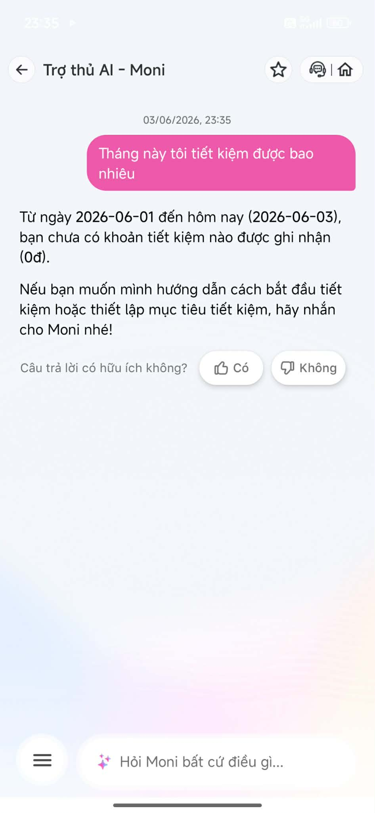
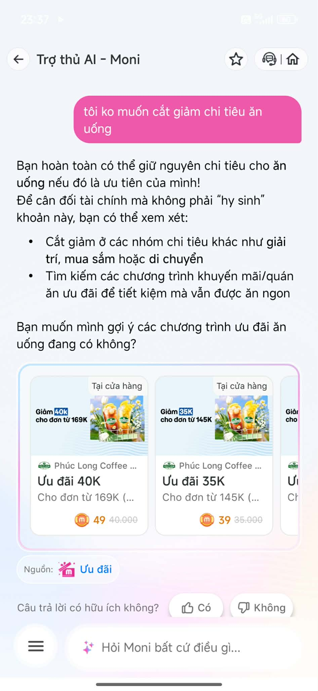

Needfinding → 4 Paths → Product Decision → SPEC
Moni hoạt động tốt khi trả lời các câu hỏi về dữ liệu tài chính hiện có. Tuy nhiên với các câu hỏi cần tư vấn cá nhân hóa như "Tôi nên đầu tư gì?", AI chưa có cơ chế low-confidence và chưa tận dụng dữ liệu tài chính cá nhân.
Điểm mạnh: AI sử dụng dữ liệu chi tiêu thực tế để đánh giá tình hình tài chính và đề xuất bước tiếp theo.

Điểm mạnh: AI truy xuất dữ liệu chính xác và trả lời đúng nhu cầu của người dùng.

AI hiểu mong muốn của người dùng và đề xuất các lựa chọn thay thế (giảm nhóm khác, sử dụng ưu đãi).
Đề xuất: Cho phép người dùng chọn phương án phù hợp và lưu preference cho các lần tư vấn sau.
AI trả lời bằng kiến thức chung thay vì sử dụng dữ liệu cá nhân trên MoMo.
Thiếu: Low-confidence flow, hỏi mục tiêu đầu tư, thời gian đầu tư, mức chấp nhận rủi ro.
Khi user hỏi: "Tôi nên đầu tư gì?" AI trả lời bằng các lựa chọn đầu tư phổ biến mà không dùng dữ liệu tài chính của user. Impact: - Không tạo khác biệt so với chatbot thông thường. - User không nhận được tư vấn cá nhân hóa. Layer: - Promise - Data/Tool - UX Recovery Requirement: - Hỏi thêm mục tiêu đầu tư. - Hỏi khẩu vị rủi ro. - Hỏi thời gian đầu tư. - Sử dụng dữ liệu chi tiêu hiện có.
User: Tôi nên đầu tư gì?
↓
AI phát hiện độ tự tin thấp
↓
Hỏi:
- Mục tiêu?
- Bao lâu?
- Rủi ro?
↓
Phân tích dữ liệu MoMo
↓
Đề xuất cá nhân hóa
↓
User đánh giá / chỉnh sửa
↓
Correction Log